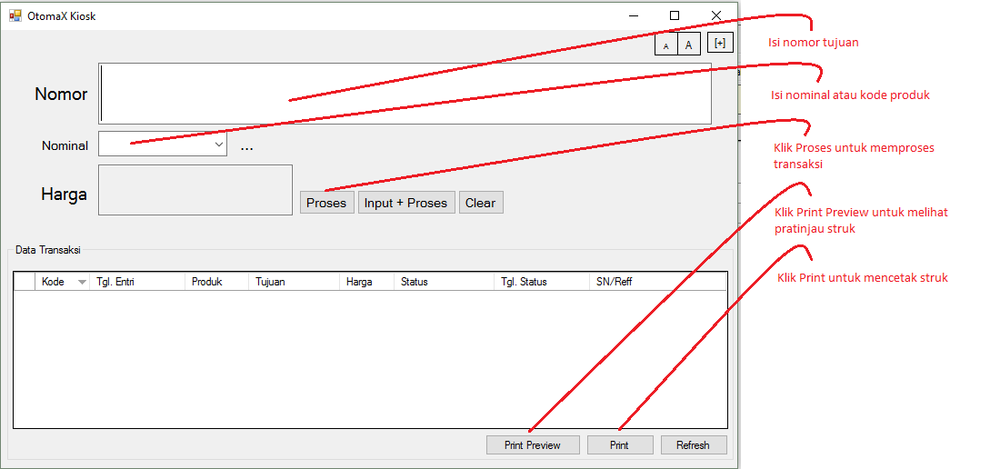

Kiosk
Ingin jualan pulsa, token listrik, pembayaran tagihan listrik dan lain - lain di konter dengan aplikasi dan bisa cetak struk seperti di Alfamart dan Indomart? Kini di dalam OtomaX terdapat fitur tersebut, bernama Kiosk.
Kiosk merupakan fitur baru di versi 3.8.3 klik disini ditujukan untuk memudahkan transaksi penjualan pulsa, token listrik, pembayaran tagihan listrik, BPJS dan lain - lain di toko atau konter pulsa, dilengkapi dengan cetak struk sehingga Anda dapat mencetak struk untuk setiap transaksi.
Fitur ini menyatu dengan OtomaX (tidak terpisah), langsung dapat dioperasikan melalui menu Alat Bantu -> Kiosk. Apabila Anda tertarik dengan Kiosk dan belum memiliki OtomaX silahkan klik disini; dan apabila belum menggunakan versi 3.8.3 lakukan update klik disini; dan apabila ingin membayar iuran tahunan OtomaX klik disini.
Kemudian bagaimana penggunaannya?... simak yang berikut ini dengan seksama:
-
Klik Alat Bantu -> Kiosk. Lakukan sesuai petunjuk dibawah ini:

Box Pembulatan Harga berguna untuk membulatkan harga jual, misal harga pulsa S5 adalah 5.500 dan box Pembulatan Harga diisi 2.000; maka harga di Kiosk akan dibulatkan menjadi 7.000. Jika menginginkan harga jual tanpa pembulatan (sesuai di Administrasi -> Produk atau Administrasi -> Harga Grup), pada box Pembulatan Harga isi dengan 0.
Pop up seperti gambar diatas hanya akan muncul sekali saja yakni saat pertama kali Kiosk dijalankan, setelahnya tidak akan muncul lagi, sehingga bila Anda ingin mengubah nilai Pembulatan, klik Setting -> Lain-lain -> key: Kiosk.admin.Pembulatan pada kolom nilai isi dengan yang Anda inginkan, misal 1000, 2000 atau lainnya; perhatikan gambar di bawah ini:

Dan bila ingin mengganti akun yang digunakan transaksi, klik Setting -> Lain-lain -> key: Kiosk.admin.KodeReseller pada kolom nilai isi dengan Kode Reseller yang Anda inginkan; perhatikan gambar di bawah ini:

-
Buat template struk sebagai rancangan struk yang akan dicetak dan diberikan kepada pelanggan sebagai berikut:
- Jalankan aplikasi Notepad.
-
Pada Notepad isi dengan isian seperti dibawah ini dengan cara diketik:
Struk yang dihasilkan saat dicetak akan seperti di bawah ini, dimana [tglentri], [tujuan], [nominal], [sn] dan [harga] akan terisi sesuai data transaksi:
LARISO PULSA
Jl. Waru Doyong No. 11 Karangan Ula
Tlp. 081234567890
-----------------------------------
Struk Pembelian Pulsa
Tanggal : [tglentri]
Nomor : [tujuan]
Nominal : [nominal]
Reff/SN : [sn]
Harga : [harga]
-----------------------------------
Terima kasih
- Tekan Ctrl + S pada keyboard untuk menyimpan template dan beri nama: struk_pulsa.htm
- Tutup Notepad, pembuatan template struk sudah selesai. Lakukan hal yang sama untuk produk selain pulsa, misalnya token listrik, pembayaran tagihan listrik dan lainnya.
- Letakkan file template struk yang telah dibuat di folder lokasi instalasi OtomaX.
-
Klik Administrasi -> Provider pada kolom Path Templet Struk isi dengan nama file template struk, yakni struk_pulsa.htm (sesuaikan dengan nama file template struk).

Lakukan hal sama pada template struk untuk provider yang lain.
- Pastikan Komputer Anda telah terhubung dengan printer dengan benar agar dapat mencetak struk. Untuk tata cara setting printer silahkan baca manual book yang disertakan dalam kardus printer atau tanyakan ke penjualnya.
-
Selesai. Sampai disini Kiosk siap dioperasikan untuk berjualan, klik Alat Bantu -> Kiosk, lalu lakukan sesuai petunjuk di bawah ini:

PERHATIAN:
Apabila saat meng-klik Print Preview atau Print muncul pesan error: NullReferenceException: Object reference not set to an instance of an object, maka:- Pastikan di komputer telah terpasang printer.
- Pilih file template struk -> klik kanan -> klik Open with -> klik Internet Explorer -> tekan tombol Ctrl + P.
- Selesai. Coba lakukan lagi Print Preview atau Print di Kiosk.
Sebagai tambahan informasi, terdapat beberapa menu terkait Kiosk, diantaranya:
- Menu untuk mengatur tampilan Kiosk, perhatikan gambar dibawah ini:

-
Menu RegEx SN Struk di Administrasi -> Provider.
Berguna untuk membuat parameter baru dari SN dan menampilkannya di struk. Misalnya Produk Token Listrik SN-nya: 6786-0932-6634-3208-8936/JAY-SATRIA/R1/450VA/43,90, maka bisa dipecah menjadi: [token], [nama], [tarif] dan [kwh] dengan mengisikan: (?<token>.{24})/(?<nama>[^/]+)/(?<tarif>.+)/(?<kwh>[.,\d]+) di RegEx SN Struk provider Token Listrik.
Kemudian membuat template struk seperti dibawah ini dengan cara diketik, disimpan dan diberi nama struk_token.htm dan seterusnya seperti panduan diatas: Akan dihasilkan struk saat dicetak sebagai berikut, dimana [tglentri], [tujuan], [nama], [tarif], [kwh], [token] dan [harga] akan terisi sesuai data transaksi dan hasil tangkapan RegEx SN Struk:
LARISO PULSA
Jl. Waru Doyong No. 11 Karangan Ula
Tlp. 081234567890
-----------------------------------
Struk Pembelian Token Listrik
Tanggal : [tglentri]
ID Pelanggan : [tujuan]
Nama : [nama]
Tarif/Daya : [tarif]
KwH : [kwh]
Token : [token]
Harga : [harga]
-----------------------------------
Terima kasih
Selanjutnya apabila Anda memiliki pertanyaan seputar Kiosk silahkan klik disini.